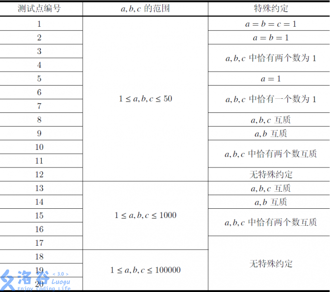

“无体育，不清华”、“每天锻炼一小时，健康工作五十年，幸福生活一辈子”
在清华，体育运动绝对是同学们生活中不可或缺的一部分。为了响应学校的号召，模范好学生王队长决定坚持晨跑。不过由于种种原因，每天都早起去跑步不太现实，所以王队长决定每a天晨跑一次。换句话说，假如王队长某天早起去跑了步，之后他会休息a−1天，然后第a天继续去晨跑，并以此类推。
王队长的好朋友小钦和小针深受王队长坚持锻炼的鼓舞，并决定自己也要坚持晨跑。为了适宜自己的情况，小钦决定每b天早起跑步一次，而小针决定每c天早起跑步一次。
某天早晨，王队长、小钦和小针在早起跑步时相遇了，他们非常激动、相互鼓励，共同完成了一次完美的晨跑。为了表述方便，我们把三位同学相遇的这天记为第0天。假设三位同学每次晨跑的时间段和路线都相同，他们想知道，下一次三人在跑步时相遇是第几天。由于三位同学都不会算，所以希望由聪明的你来告诉他们答案。
输入格式：
输入共一行，包含三个正整数a,b,c表示王队长每隔a天晨跑一次、小钦每隔b天晨跑一次且小针每隔c天晨跑一次。
输出格式：
输出共一行，包含一个正整数x，表示三位同学下次将在第x天相遇。

来自 CodePlus 2017 11 月赛，清华大学计算机科学与技术系学生算法与竞赛协会 荣誉出品。
Credit：idea/何昊天 命题/何昊天 验题/卢政荣
Git Repo：https://git.thusaac.org/publish/CodePlus201711
感谢腾讯公司对此次比赛的支持。
明显可以看出是求三个数的最小公倍数！！！STL大法好！
代码：
#include<bits/stdc++.h>
using namespace std;
int main()
{
int x,y,z;
cin>>x>>y>>z;
cout<<(x/__gcd(x,y)*y)/__gcd((x/__gcd(x,y)*y),(y/__gcd(y,z)*z))*(y/__gcd(y,z)*z);//不用担心答案太大。
return 0;
}
竟然只有八十五分，震惊。果断下了个测试点。
输出好像爆了long long但好像没什么特别的。
然后一阵瞎改后的代码：
#include<bits/stdc++.h>
using namespace std;
int main()
{
long long x,y,z;
cin>>x>>y>>z;
cout<<(x/__gcd(x,y)*y)/__gcd((x/__gcd(x,y)*y),(y/__gcd(y,z)*z))*(y/__gcd(y,z)*z);
return 0;
}
然后就A了。。。
附一组数据：
input：99885 99804 99843
output：110591903684580
会发现两种代码的答案不一样。
可能是__gcd()的问题吧。。。